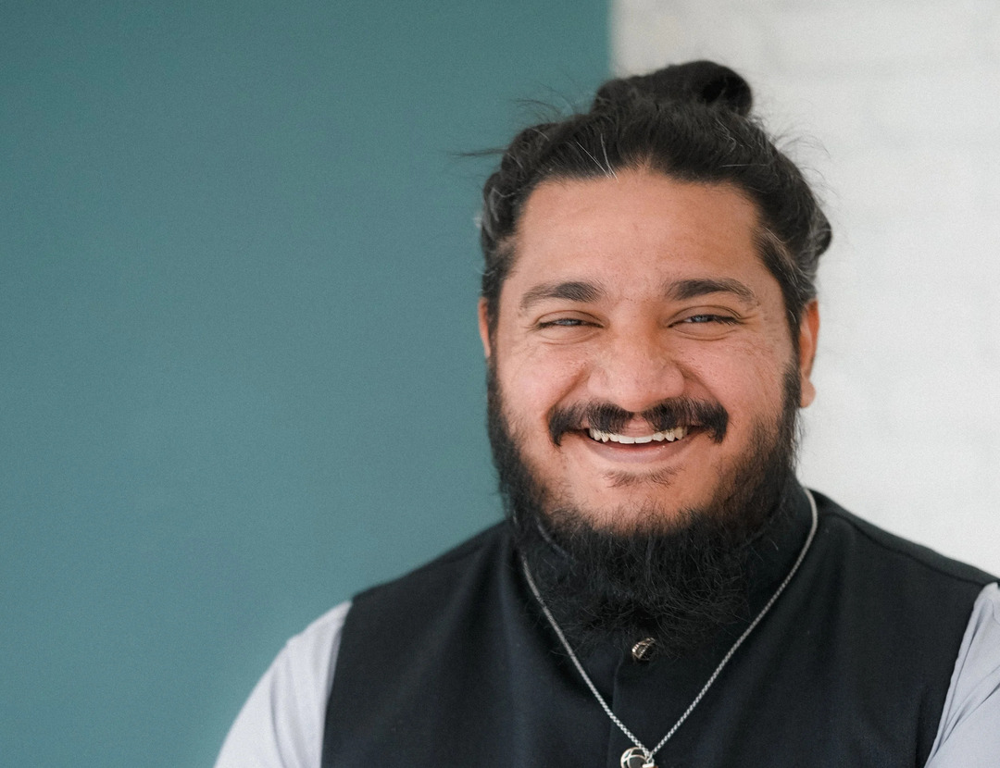

Free to be Faithful
Institute for Christian Studies
Decolonizing
The Great
Commission
Rethinking mission through a decolonized, Jesus-shaped lens
Winter 2027 · f2bf.icscanada.edu/courses


Rethinking mission through a decolonized, Jesus-shaped lens